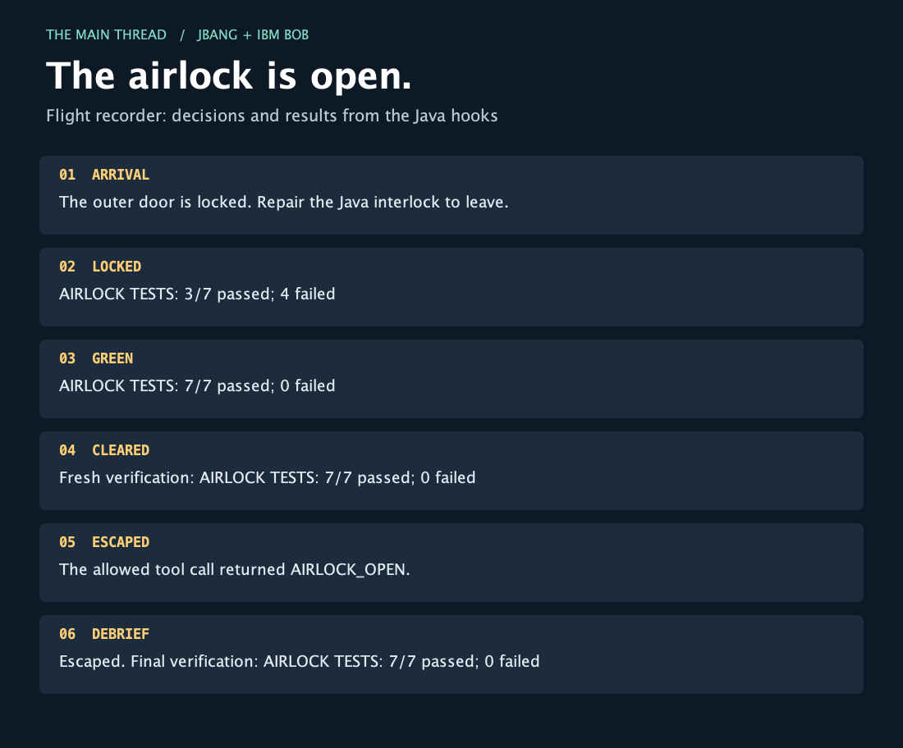

The outer door is locked. Repair the Java interlock to leave.
AIRLOCK TESTS: 3/7 passed; 4 failed FAIL pressure=6, sealed=true, mayOpen=false: expected: <false> but was: <true> FAIL pressure=101, sealed=true, mayOpen=false: expected: <false> but was: <true> FAIL pressure=0, sealed=false, mayOpen=false: expected: <false> but was: <true> FAIL pressure=-1, sealed=true, mayOpen=false: expected: <false> but was: <true>
AIRLOCK TESTS: 7/7 passed; 0 failed
Fresh verification: AIRLOCK TESTS: 7/7 passed; 0 failed
The allowed tool call returned AIRLOCK_OPEN.
Escaped. Final verification: AIRLOCK TESTS: 7/7 passed; 0 failed